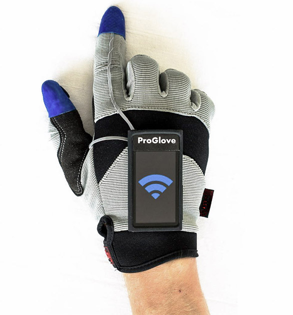

Les vêtements
Une nouvelle ère dans le monde du prêt à porter a commencé. En effet, de nombreux vêtements connectés ont fait leur apparition depuis ces 5 dernières années. Ces vêtements d’un nouveau genre ont les mêmes fonctions que tous les autres, seulement ils disposent d’une fonctionnalité en plus : mesurer votre rythme cardiaque, envoyer des notifications, guider votre chemin et bien d’autres choses encore.
| Les vêtements | |||
|---|---|---|---|
| Chaussures | Vestes/hauts | Couvre-chefs | Gants |
| Sport | Manteaux/vestes | Bonnets | *** |
| de ville | T-shirts | Chapeaux | *** |
| Chaussettes | *** | Casquettes | *** |
| *** | *** | *** | *** |
| Les accessoires | |||
|---|---|---|---|
| Chaussures | |||
| Sport | |||
| Ville | |||
| Chaussettes | |||
| Vestes/hauts | |||
| Manteaux/vestes | |||
| T-shirts | |||
| Couvre-Chefs | |||
| Bonnets | |||
| Chapeaux | |||
| Casquettes | |||
| Gants |
Chaussures
Chaussures de Sport
Ce début d’année marque un nouvel engouement des équipementiers sportifs pour les technologies connectées. Nike a lancé ses Adapt BB, suivi dans la foulée par Puma avec sa technologie Fi. Les deux fabricants veulent optimiser le serrage des chaussures autour du pied de l’utilisateur en fonction de son utilisation (activité sportive plus ou moins intense, casual…).
Au-delà de la technicité de ces chaussures — et elle est remarquable —, ces produits ont aussi la particularité de communiquer avec un smartphone. Ce qui peut d’ailleurs se révéler une complication, comme Nike le constate avec la version Android du firmware des Adapt BB qui « brique » une chaussure sur deux.
La technologie fait partie intégrante de l’ADN des équipementiers sportifs. À l’image de nos gadgets électroniques, c’est l’innovation qui fait vendre des baskets. En 2017, Nike était le 99e plus important détenteur américain de brevets (Apple était 12e, IBM premier).
Les fabricants de chaussures ont une place centrale à prendre dans un futur dominé par l’informatique vestimentaire. Si on peut se passer de l’Apple Watch et de lunettes connectées, en revanche il est impossible de sortir sans pompes aux pieds. Et les chaussures ont tout à gagner à marcher main dans la main avec le smartphone au cœur de nos vies connectées.
Chaussures de Ville
Un objet connecté aussi utile qu’innovant puisqu’il s’agit d’une chaussure qui change de couleur en quelques secondes au gré de vos envies, pilotée par une application smartphone. Adaptez ainsi la couleur de vos chaussures à celle de votre pull, de votre vernis ou de tout ce que vous voulez, simplement en le prenant en photo !
Les chaussures, des sneakers blanches, intègrent sur la tige une bande de fibre optique tissée (développée par la société lyonnaise BROCHIER TECHNOLOGIES) reliée à une led multicolore. Cette dernière est alimentée par un module électronique dissimulé dans la semelle, communiquant en Bluetooth avec un smartphone.
L’autonomie des chaussures est estimée entre 6 à 2 mois grâce à l’usage de la Bluetooth Low Energy.
Laçage automatique ? Souvenez-vous dans le film Retour vers le Futur. Peu avant de sauter sur son hoverboard, Marty Mc Fly enfile des chaussures qui s’ajustent et se lacent automatiquement. Digitsole se base peu ou prou sur le même concept pour créer le SmartShoe001. Présentée au CES 2016, cette chaussure connectée est entièrement contrôlable depuis votre téléphone. Modulation de la température, suivi de l’activité physique (pas, calories, distance…) et donc fermeture automatique des chaussures en fonctions de votre pied. Parfait si vous n’avez jamais aimé faire vos lacets et que vous accrochez à son style futuriste !
Chaussettes
Après les montres, bracelets, chaussures, lunettes et autres t-shirts connectés, c’est au tour des chaussettes de le devenir.
Comme le dit l’adage : « on arrête pas le progrès ». Voici surement ce qui vous est venu à
l’esprit lorsque vous avez vu cette histoire de chaussettes connectées.
Omniprésents au CES 2014 de Las Vegas, les objets connectés se multiplient et le sport est de plus en
plus concerné.
Les capteurs e-textile préviennent les maux de dos ou blessures en vous aidant à mieux courir.
La répartition du poids ainsi que le type de foulées sont analysés ainsi que le nombre de calories brulées, le nombre de pas, la cadence ou encore la longueur de la foulée.
Il sera ensuite possible de comparer ces données avec d’autres utilisateurs dans l’optique d’obtenir des conseils et ainsi améliorer vos statistiques, statistiques qui pourront être partagées grâce à l’application. L’application Sensoria Fitness sera disponible pour iPhone, Android et Windows Phone.
Vestes/hauts
Manteaux/vestes
C’est l’un des vêtements connectés qui nourrit le plus d’espoir en terme de fusion design et high-tech. La veste Jacquard conçue par Google en partenariat avec Levi’s, est un véritable concentré de technologie. Surtout, elle prend une approche totalement différente des autres vêtements connectés. Ici, il n’est pas question d’intégrer des capteurs. On veut transformer n’importe quelle surface textile en un espace tactile et interactif. En bref, votre veste deviendrait une sorte de télécommande universelle. Parmi les fonctionnalités, on retrouve ainsi : la gestion de la musique, passer ou répondre à un appel, envoyer des messages, Google Maps ou encore Google Agenda.
Malgré plusieurs retards, la veste connectée Jacquard devrait normalement être commercialisée cet automne à partir de 350 dollars. Un petit investissement qui pourrait en décourager certains mais surtout l’avenir des vêtements. Les deux marques devraient continuer ce partenariat et sortir ensuite de nouveaux produits.
Nous vous avons présenté le manteau connecté Baubax en juillet dernier. Elle venait alors de faire un véritable carton sur la plateforme de financement participatif Kickstarter avec plus de 9 millions de dollars recueillis ! Présentée comme “la meilleure veste de voyage”, ce modèle intègre une quinzaine de fonctionnalités permettant de vous adapter à toutes les conditions ou presque. Oreiller mobile, casque pour les yeux, stockage des écouteurs ou encore d’un iPad, elle permet de tout faire ou presque. Mais ce qui devrait particulièrement vous intéresser, c’est la capacité de recharger votre smartphone grâce à la technologie QI sans fil.
T-shirts connectés
Les t-shirts connectés sont des t-shirts qui, à l’image des bracelets connectés, vont surveiller l’état du corps. J’entends par là, le rythme cardiaque, le nombre de pas, l’humidité et la température du corps et celle de l’extérieur. Ils surveillent également l’activité physique et en déterminent le nombre de calories brûlées par le porteur.Mais les t-shirts connectés ne s’arrêtent pas là, avec des capteurs placés sur différentes parties du corps, certains t-shirts connectés comme ceux de Athos surveille quels muscle est en train de travailler et pour les amateurs de yoga, il avertit sur la bonne position à avoir pour le pas se blesser. Le tout est retranscrit sur votre smartphone.
Certains, un peu plus audacieux vont aller jusqu’à déterminer son état moral, s’il est heureux, stressé ou détendu…
Les t-shirts sont connectés au smartphone en bluetooth. La surveillance se fait à l’aide capteurs résistant à l’eau dans les tissus. Ces t-shirts connectés sont pour le moment surtout destinés aux personnes ayant un profil de sportif.
Pour l’instant sur le marché des t-shirts connectés, il y a seulement un trio d’entreprises : OM Signal, HexoSkin et Cityzen Sciences. Mais le marché se développe peu à peu grâce à des partenariats avec créateurs ou des marques plus accéssible au public comme Ralph Lauren pour les tennisman et Adidas.
Et si vous n’avez pas envie de remplacer votre t-shirt fétiche pour le sport, pas de soucis, il existe des capteurs capable de le rendre connecté sans le changer comme le POPS de Quicksilver.
Couvre-chefs
Bonnets connectés
Comment allier l’utile à l’agréable quand on est fan de musique et que l’hiver arrive? Tout simplement en mettant un bonnet sur ses écouteurs oui mais si, comme moi, vous ne supportez pas d’utiliser des écouteurs intra-auriculaires, la question se pose …
Idem pour ceux qui utilisent un casque audio sur le bonnet: toujours un peu compliqué de faire tenir le casque audio sur le bonnet (sans parler du look😉) et en plus, la qualité du son s’en ressent (plus étouffé).
Pour toutes ses raisons, de nombreux spécialistes en accessoires mobiles, ont commercialisé un nouveau vêtement connecté : les bonnets connectés bluetooth! Ecoutez de la musique depuis votre téléphone, répondez aux appels, dictez vos textos…
Musique, chaleur, look et liberté de mouvements : un casque bluetooth caché dans un bonnet voilà ce que promet le bonnet connecté!
Avec un bonnet connecté, ne vous attendez cependant pas une qualité sonore égale à celle d‘un casque haut de gamme sinon vous seriez forcément déçus. Par contre vous aurez un bonnet équipé d’écouteurs d’appoint très satisfaisants qui vous permettront d’écouter vos morceaux préférés, de passer vos appel tout en gardant les oreilles au chaud.
Chapeau
Mettre de la crème solaire pour se protéger, c’est bien. Mais vous protège-t-elle vraiment des UV ? Quelles quantités appliquer sur votre peau ? A quelle fréquence ? Le chapeau connecté SOWAY vous apporte toutes ses réponses.
Comment ça marche ? Le chapeau est équipé d’un capteur d’UV qui enverra une notification via une application lorsque le porteur du chapeau devra remettre de la crème. Le capteur propose aussi une option « alerte enlèvement », bien pratique pour cet été s’il est posé sur le chapeau de votre enfant ! Dès que celui-ci s’éloigne de plus de 50m, votre smartphone vous avertit.
Les chapeaux protègent du soleil mais ils ne protègent pas tous de la même manière. A l’image des crèmes solaires qui n’ont pas toutes le même indice de protection, un chapeau Soway vous protège 3 fois plus qu’un chapeau classique. Le « Soway » est un produit réunissant 3 qualités jamais réunies en un seul chapeau
Casquettes connectées
L’endormissement au volant des chauffeurs routiers est l’une des causes principales d’accident mortel impliquant des poids lourds et des voitures, notamment sur autoroute. Afin de lutter contre ce problème, le constructeur Ford a mis au point une casquette intelligente et connectée qui détecte les signaux de fatigue avancée pour indiquer au chauffeur qu’une pause est indispensable.
Selon les chiffres de la sécurité routière, un tiers des accidents mortels sur les autoroutes sont dus à la somnolence au volant. Une fatigue importante implique une perte des réflexes et surtout un risque d’endormissement ou de micro-sommeil de quelques secondes qui peuvent être dramatique. Un risque autant plus élevé chez les chauffeurs routiers qui cumulent souvent une « dette de sommeil ». Aussi, le constructeur automobile et de poids lourds, Ford, a mis au point une casquette intelligente qui détecte les signes de somnolence et renvoie des signaux d’alerte afin d’indiquer au chauffeur qu’il est temps de prendre une pause.
La casquette connectée mise au point par Ford est encore à l’état de prototype. Celle-ci a été développée en partenariat avec des médecins spécialisés dans le sommeil. Selon les experts, il ne faut pas confondre la fatigue et la somnolence. La fatigue réduit la capacité de concentration et est caractérisée par des picotements des yeux, des raideurs dans la nuque, un dos douloureux et un regard fixe. Une pause est indispensable toutes les deux heures en cas de fatigue.
La somnolence est, quand à elle, beaucoup plus dangereuse car se traduisant par un risque d’endormissement élevé. Les spécialistes indiquent que la somnolence se traduit par des bâillements, une sensation de paupières lourdes et surtout des périodes de micro-sommeil d’une à quatre secondes. Le risque d’accident est alors multiplié par 3 ou 4 dans la demi-heure qui suit l’apparition de ces signaux. C’est là qu’intervient la casquette intelligente Ford.
Gants connectés

Ces gants connectés vous permettent de décrocher vos appels sans utiliser votre appareil. Une simple pression sur les gants et votre communication commence. Innovant, l'un des gant incorpore un haut-parleur au pouce et un microphone à l'auriculaire. Aucune gêne ou grésillement ne se fait ressentir, la communication est claire et nette. Une fonction de composition du dernier numéro est également possible. Le bout de chacun des doigts, des deux gants, restent tactiles pour une utilisation de votre mobile. Tous les réglages se font directement sur le gant. Un câble usb / micro-usb est fourni pour le rechargement du gant. Ces gants sont compatible avec tout appareil possédant le Bluetooth. Ils possèdent une autonomie de 6 heures en communication et de 7 jours en veille et sont fabriqués en laine
Le langage des signes est une merveille invention mais les personnes non muettes capables de le parler ne sont pas si nombreuses. Il sert donc davantage aux muets à communiquer entre eux et avec leurs proches. Cela ne facilite donc pas vraiment les choses dans la vie quotidienne. C’est là qu’interviennent les gants connectés SignLanguage, conçus par Hadeel Ayoud, une étudiante londonienne en 2015. “J’ai une nièce autiste de 4 ans et qui ne parle pas. Quand je la voyais signer, je me demandais ce qui se passerait si elle essayait de communiquer avec quelqu’un qui ne parle pas le même langage”, explique la jeune femme d’origine saoudienne. Grâce à des micro-capteurs, ce gant est donc capable de détecter les mouvements de chaque doigt réalisés par quelqu’un qui parle en langage des signes. Ils détectent aussi la position du gant dans l’espace. Grâce à ces deux éléments, il devient possible au gant de savoir quel est le geste réalisé. Une puce située dans la doublure les transforme ensuite en sons.